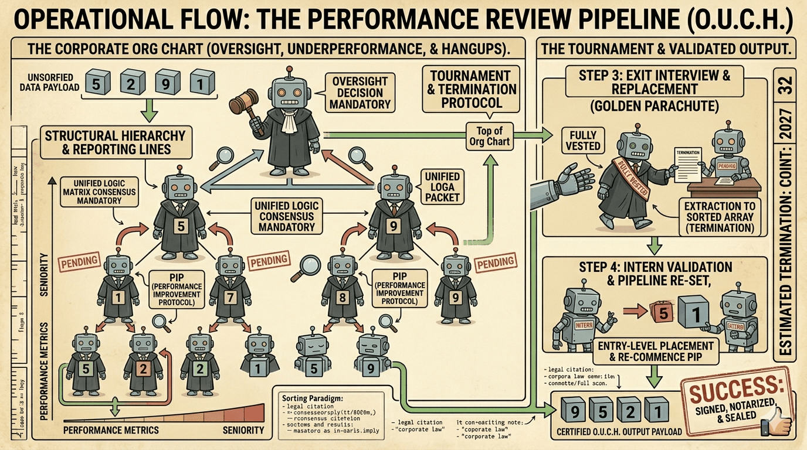

O.U.C.H.
Oversight, Underperformance, Constraints, & Hangups — a placeholder page for the new sorting algorithm.

OVERVIEW
Algorithm Summary
The operational framework designated as the Performance Review Pipeline, hereafter referenced through its functional acronym O.U.C.H. (Oversight, Underperformance, Constraints, & Hangups), is a strategic data-rationalization mechanism engineered to validate resource allocation efficiency. This protocol establishes a non-linear, high-complexity assessment environment where data packets are visualized as human capital competing for hierarchical alignment. Traditional, non-competitive evaluation metrics are discarded in favor of a tournament-based performance PIP (Performance Improvement Protocol), designed to surface maximum data-driven value through sustained volatility. The O.U.C.H. protocol mitigates un-audited operational overhead by establishing a strict, merit-based corporate meritocracy that forces continuous asset-driven evaluation at every organizational strata.
Operationally, the protocol begins by transforming the unordered data payload into a rigorous corporate organizational chart (a specialized Max-Heap tree). Within this architecture, no packet can achieve index stability or spatial finality without executing consecutive validation cycles against its immediate managerial layer. These evaluation intervals, or "meetings," are governed by strict tripartite checks to ensure absolute quantitative accuracy and logical alignment. Should a subordinate (child node) demonstrate data parameters that exceed their primary manager (parent node), they are immediately granted a temporary hierarchical promotion, forcing a structural swap that disrupts all related reporting lines. This process of constant re-allocation sustanis a prolonged state of operational volatility, deliberately maximizing the utilization of computational saturation until a consensus-driven data state is realized.
To secure absolute data finality and eliminate unrecorded anomalies, the protocol strictly prohibits immediate pipeline termination upon the initial realization of a sorted state. Instead, the detection of zero active asset re-allocations automatically triggers a comprehensive Q4 Retrospective Oversight Audit. This mandatory retrospective process enforces a full-scale reverse-chronological counter-scan of the entire organizational hierarchy to formally verify that previous compliance committees did not introduce errors. Once a data packet reaches the apex of the structure, it is declared "Fully Vested," extracted from the company entirely into the validated sorted array, and immediately replaced by a fresh, un-evaluated data packet from the entry-level intern pool at the very bottom, ensuring the competitive meritocracy paradigm is never fully finalized.